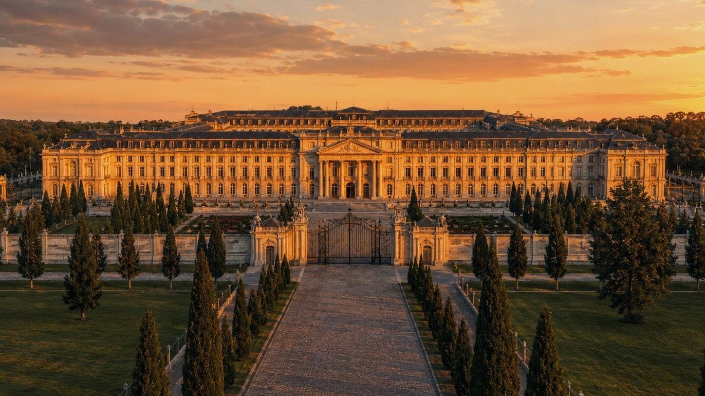
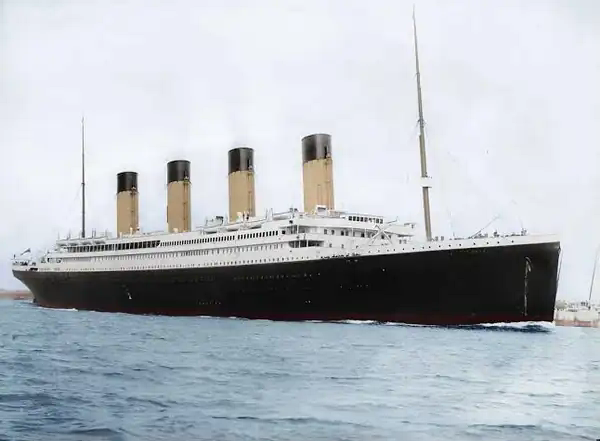

Independent concept-development project · since 2026
Two long-term concepts. Two separate directions.
The Estate Project publicly documents two independent long-term concepts: a large coastal estate and a full-size Titanic reconstruction with modern safety and operating systems.

Concept I
The Estate
One palace, its park, arrival roads, forest and coastline — planned as one consistent place.
Open the Estate→
Concept II
Titanic
A full-size Titanic reconstruction with a historically recognizable appearance and modern safety and operating systems.
Open Titanic→Current public status
Active concept development, clearly separated from future construction.
The project is public and actively documented. Research, visual consistency and project documentation are ongoing; physical construction and shipbuilding have not started.
Research and source reviewConcept visualisationsDevelopment documentationPublic updates